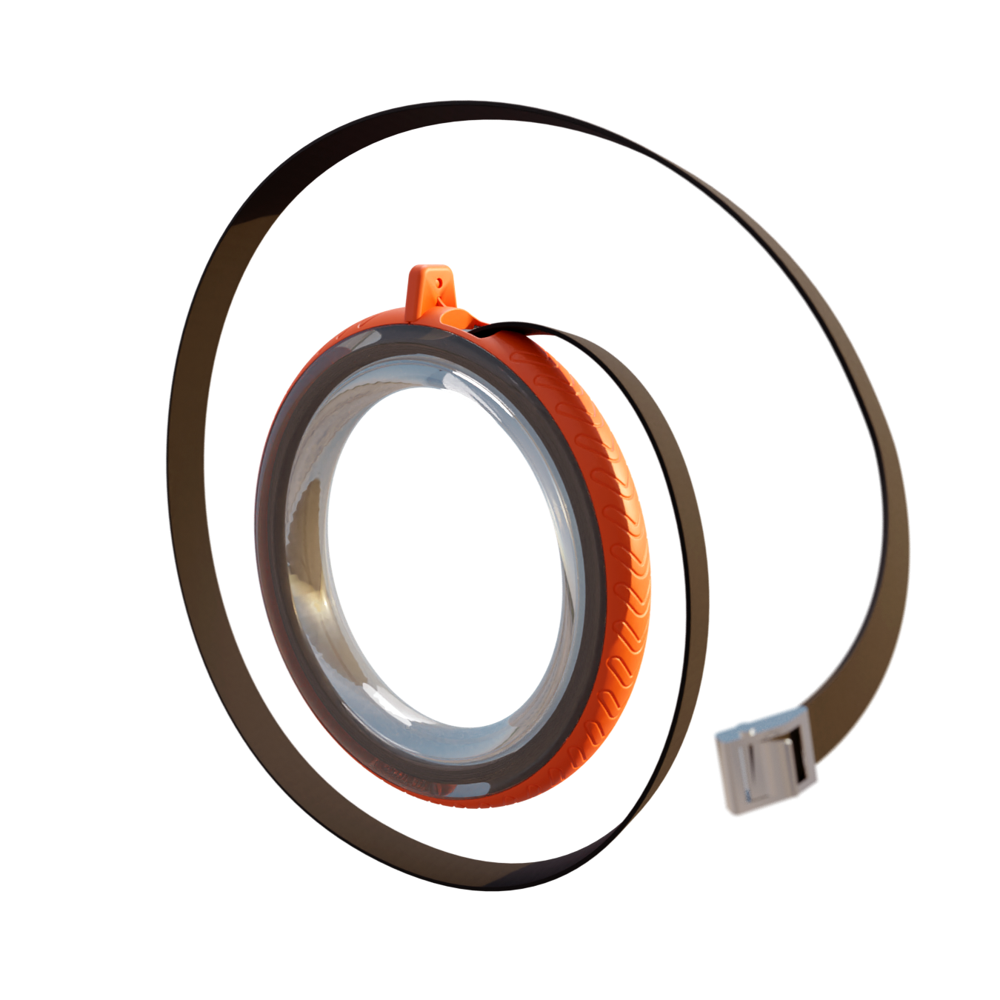
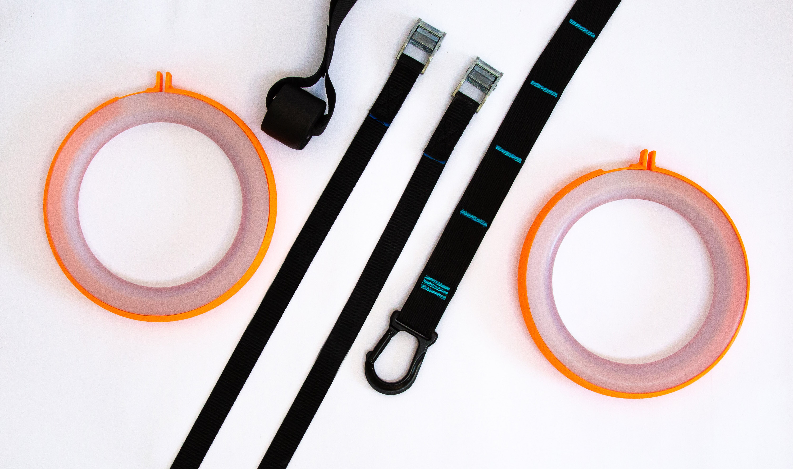
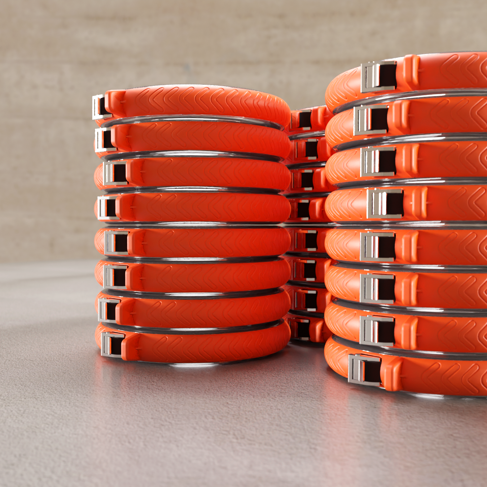
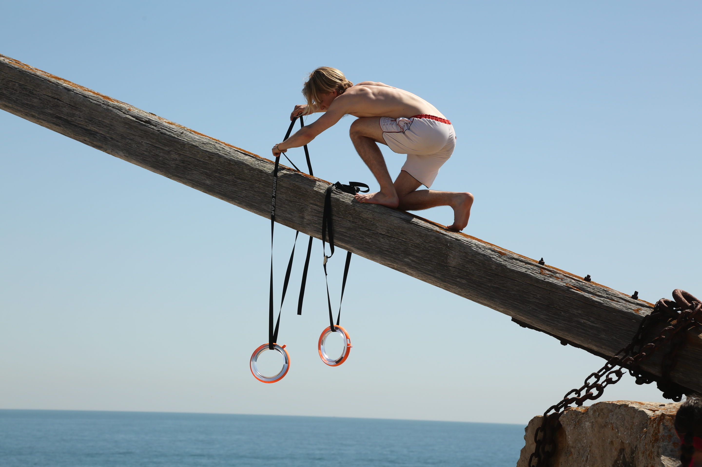

Infinity Ring
Founded and run the company Infinity Ring. Based off my personal experience using gymnastic rings, I found a solution to the problem of storing the rope between work out sessions.
Project involved designing prototypes, setting up relationships with manufacturers. Generating a brand logo, name and mission. Managing finances and driving marketing forward.

If you use conventional gymnastic rings you will have faced the tedius problem of collecting and storing the straps. No matter how neatly you wrap the straps, the second they hit your gym bag you have 6 metres of mess.
Infinity Ring solves this. The inside of of Infinity Ring is cored out to allow the strap to be stored internally. This feature combined with a sliding external sleeve allows easy packing and storing after a workout.

The product offering includes two rings, two straps with buckles and a door/tree anchor.

A render of what the stock would look like!

Photo taken of one of the early prototypes. A lot of time was invested in getting the right surface finish so the plastic remained translucent. User testing raised this as a major selling point, as one could see if the ring contained rope but also provided aesthetic appeal.
